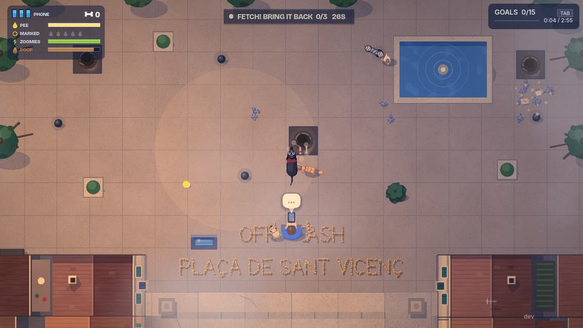

Sarrià
The village the city swallowed, as its shutters go up
Early-morning dawn in old Sarrià, the former hilltop village absorbed by the city without losing its narrow streets. Metal bakery shutters rattle open to warm croissant air while Plaça de Sant Vicenç's bell tower counts the morning and balcony pots drip onto the stone.
- Off-leash stop
- PLAÇA DE SANT VICENÇ (Open plaça)
- Beat the clock
- Under 2:55
Screenshots



Goals (15)
- Mark 5 spots
- Have 4 good long sniffs
- Get the phone home without a scratch
- Get yourself home without a bump
- Get your business bagged
- Bring the ball back 3 times
- Scarf down 2 dropped snacks
- Howl along with the church bells
- Sniff the bread at 2 bakeries
- Bark good morning to the balcony gardener
- Land an x3 trick combo
- Pinch the bag of croissants on the market step
- Spell LEASH
- Find the hidden pernil
- Beat the clock (under 2:55)